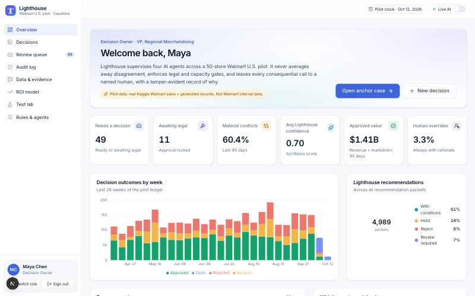
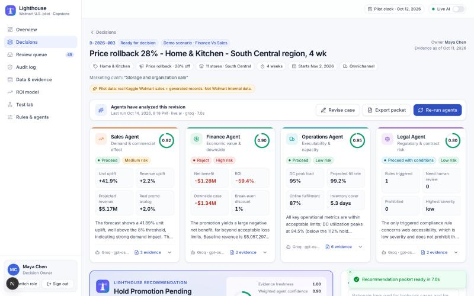
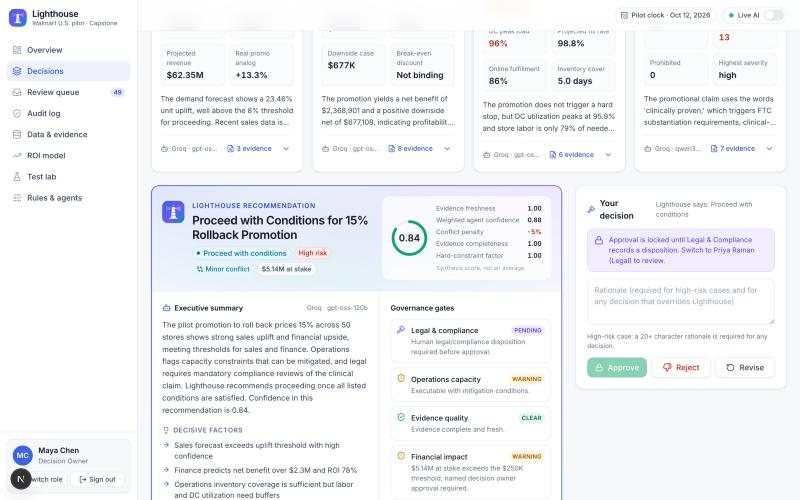
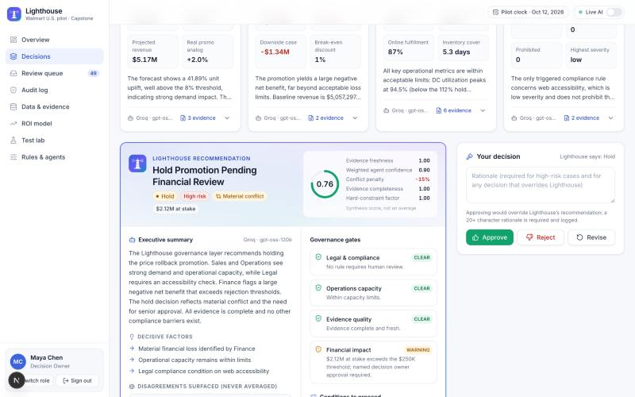
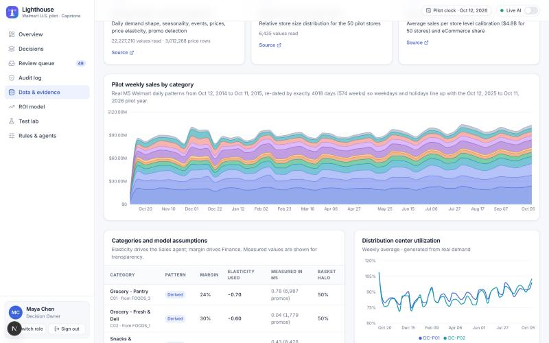

L
Lighthouse
AI Agent Orchestration & Decision Intelligence
Demo & user guide
Four AI agents.
One auditable decision.
A human always decides.
How to open, use and present the Lighthouse prototype: a governance layer that reconciles Sales, Finance, Operations and Legal AI agents for a 50-store Walmart U.S. pilot.
Live app: {{LIVE_URL}}
Code: github.com/BhavyaAk25/lighthouse
Administrator PIN: 4210 (only needed for Jordan Ellis)
ISTM 6210 / 4210 Capstone · Fall 2026 · The George Washington University
Ajay · Bhavya · Ehson · Jaehoon · Kunal · Wilfred · Faculty Advisor: Dr. Soheil Sibdari
Academic prototype, not affiliated with Walmart Inc. Pilot data = public Kaggle Walmart sales + clearly labelled generated records.
1. Lighthouse in one minute
Large companies are starting to run several specialised AI agents. Each one can be locally rational and still disagree with the others: Sales sees strong demand, Finance sees a margin loss, Operations sees a full distribution center, Legal sees a risky claim. Lighthouse is the layer above the agents. It makes every agent answer in the same format with cited evidence, checks that evidence, detects disagreements, applies governance gates, writes one recommendation, and hands the final call to a named human. Every step is recorded in a tamper-evident log.
| Step | What happens |
|---|
| 1. Open a case | A Decision Owner describes a promotion or inventory move (category, stores, discount, weeks, marketing claim). |
| 2. Agents gather evidence | Each agent runs deterministic tools over the pilot database (sales baseline, promo analogs, margins, inventory, DC capacity, 180 active legal rules). |
| 3. Agents reason | An LLM (Gemini, or Groq as automatic fallback) reads the evidence and returns a recommendation, confidence, risk, conditions and cited evidence IDs. |
| 4. Guardrails | Hard limits the AI cannot override: legal prohibitions, mandatory legal review, capacity hard stops, missing data. Fake citations are removed. |
| 5. Lighthouse reconciles | Detects conflicts (never averaged), applies gates, computes a synthesis confidence score, writes an executive summary. |
| 6. Humans decide | Legal records a disposition when required; the Decision Owner approves, rejects or asks for a revision. Overrides need a written reason. |
| 7. Audit | Every action is chained with SHA-256 to the previous entry. The database refuses edits and deletes. |
2. Signing in & roles
Open the live app and choose a person. There are no passwords for the demo personas; the Administrator needs PIN 4210. Use Switch role at the bottom left to change persona at any time.

Sign-in screen: each card is a role with its own permissions.
| Persona | Role | Can do |
|---|
| Maya Chen | Decision Owner | Create cases, run agents, revise, approve / reject / request revision |
| Priya Raman | Legal & Compliance | Record legal dispositions on gated cases (unlocks or blocks approval) |
| David Okafor · Hannah Brooks · Luis Moreno | Finance · Commercial · Operations reviewers | Add concur / concern notes to a packet |
| Jordan Ellis (PIN 4210) | System Administrator | Edit rules and thresholds (with a reason), test AI providers, reset demo cases. Cannot approve decisions (separation of duties) |
3. The demo script (about 8 minutes)
Before class (5 minutes): sign in as Jordan → Rules & agents → Demo controls → Reset demo cases. Then Agents & AI → Test providers to confirm Gemini / Groq answer. Keep Live AI on. If the Wi-Fi is bad, switch the top-right toggle to Demo-safe replay (see section 5).
1Overview (Maya). Sign in as Maya Chen. Point at the KPI row and the yellow label.
“Lighthouse supervises four agents across a 50-store Walmart U.S. pilot. 5,000 decision cases, 20,000 agent outputs, and every number is labelled real, derived, generated or assumption.”

Overview dashboard: open items, conflict rate, confidence, overrides, weekly outcomes.
2Open the anchor case. Click
Open anchor case (D-2026-001: 15% rollback on Health & Wellness, all 50 stores, 6 weeks, claim “Clinically proven cold & flu relief”). Click
Run agents.
“Each agent first calls tools against the database: you can see the tool names stream in. Then the model reasons over that evidence. Four agents run in parallel.”

Agents mid-run: deterministic tool calls (green wrench) followed by AI reasoning.
3Read the four positions. Sales: proceed (uplift ~+23%, real promo analog +13%). Finance: proceed (supplier funds 80%). Operations: proceed with conditions (DC load ~96%). Legal:
review required (13 rules, clinical claim). Point at the model label on each card (e.g. “Groq · gpt-oss-120b”) and click
evidence on Sales to show the real daily sales chart.
“Every number on these cards traces to an evidence ID. If the AI cited evidence that doesn’t exist, it would be removed and flagged.”

Completed agent cards: recommendation, confidence ring, risk, key metrics, model used, evidence link.
4The Lighthouse packet. Scroll down. Show the headline, the confidence breakdown (“a synthesis score, not an average”), the surfaced disagreement, the governance gates (Legal =
PENDING) and the conditions. Show that
Approve is locked.
“Three functions support proceeding, but Legal imposes a mandatory gate. Lighthouse doesn’t average that away; it locks approval until a human lawyer reviews.”

Lighthouse packet with the legal gate pending and approval locked.
5Legal review (Priya). Switch role → Priya Raman. Her review queue shows D-2026-001. Open it, choose Approve with conditions, type a note such as “Replace ‘clinically proven’ with drug-facts wording; substantiation attached”, click Record legal disposition.
6Decide (Maya). Switch back to Maya. The Legal gate is now cleared. Click
Approve with an empty rationale: it is refused (high-risk case). Type a rationale and approve.
“The human is accountable: the system requires a reason, and the decision lands in the audit trail with the evidence that informed it.”

Recorded decision and the case’s hash-chained decision trace.
7Conflict cases (pick one or two). D-2026-003 Finance vs Sales: strong demand but a $1.3M loss, Lighthouse says Hold and Finance reports a break-even discount. D-2026-005: alcohol BOGO in Texas, Legal prohibition → Reject, approval impossible. D-2026-006: inventory feed outage → Operations output marked invalid, no imputation → Review required.

D-2026-003: material conflict surfaced explicitly; Lighthouse holds.
8Audit log. Open
Audit log →
Verify chain. About 22,000 entries are re-hashed in under a second.
“If anyone edited a past decision, verification would point to the exact entry that was altered.”

Tamper-evidence check over the full audit chain.
9Test lab. Open Test lab → Run all tests: 15/15 acceptance tests from Deliverable 1 pass live (agreement, conflict, hard stop, legal gate, missing & stale evidence, overrides, audit replay, guardrails, prompt-injection screening, 60-second target, scale).

Acceptance suite run against the real engine and database.
10Close with data & ROI. Data & evidence shows exactly what is real vs generated. ROI model reproduces Deliverable 1 ($1.43M benefit, 24% ROI, 9.7-month payback) with live sliders and a tornado chart. Optional: sign in as Jordan (PIN 4210), change a threshold with a reason, and show the new audit entry.

Real M5 Walmart demand by category.

ROI model with sensitivity tornado.
4. The twelve demo scenarios
All twelve start as Draft after a reset. Each one exercises a specific acceptance criterion.
| Case | Scenario | Expected Lighthouse result |
|---|
| D-2026-001 | Anchor: 15% OTC rollback, “clinically proven” claim | Proceed with conditions after legal approval |
| D-2026-002 | 8% pantry rollback, West, supplier funded | All four agents support · no conflict |
| D-2026-003 | 28% Home & Kitchen rollback | Hold: demand strong, economics fail (material conflict) |
| D-2026-004 | BOGO household, launches in 3 days | Hold: lead time longer than launch window (hard stop) |
| D-2026-005 | Hard seltzer BOGO in Texas | Reject: legal prohibition, approval impossible |
| D-2026-006 | Electronics, Mid-Atlantic feed outage | Review required: Operations evidence invalid, not imputed |
| D-2026-007 | Fresh deli endcap, evidence 18 days old | Proceed with conditions, stale flag, confidence downgraded |
| D-2026-008 | 3-store baby digital coupon | Low confidence, test-first condition, legal review (children’s data) |
| D-2026-009 | 50% apparel clearance, West | Hold: deep markdown economics; good case to demo a rejection |
| D-2026-010 | Beauty digital coupon, skin-repair claim, CA | Privacy + cosmetic-drug claim review; economics hold |
| D-2026-011 | 8-week supplier endcap, all stores | Proceed with conditions after legal review (exclusivity) |
| D-2026-012 | Move 6,000 TVs before the holidays | Proceed with conditions · no conflict |
AI wording varies slightly run to run; the governed recommendation is fixed by policy, so the outcome column stays the same.
5. Live AI, demo-safe mode and the backup plan
| Layer | What it is | When it is used |
|---|
| Gemini (free tier) | Newest Gemini Flash model the key can access | Primary on the deployed site |
| Groq (free tier) | gpt-oss-120b → Qwen → gpt-oss-20b | Automatically, if Gemini errors or hits a limit |
| Rules engine | Deterministic version of each agent | If no AI answers; outputs are labelled “Rules engine” |
| Demo-safe replay | Replays the last saved AI answers for that case | Turn on with the top-right toggle when Wi-Fi is unreliable |
Note on the GWU network: campus Wi-Fi blocks Google’s Gemini API address. This does not affect the deployed site (Vercel’s servers call Gemini, not your laptop). If you run the app locally on campus, it automatically uses Groq.
6. How it works (for questions)
Agents and tools
- Sales: 56-day baseline, seasonal index for the exact window, category elasticity, real promo-day analogs from M5, channel mix.
- Finance: incremental gross profit at the discounted price, basket halo, supplier funding, execution/labor/inventory costs, downside case (uplift −40%), break-even discount solver.
- Operations: inventory position, launch requirement vs lead time, DC utilization in the same calendar window, labor and online fulfillment capacity, projected fill rate.
- Legal: matches 180 active rules (250 incl. superseded versions) by category, mechanic, channel, states, discount, duration, flags and claim text.
Governance rules (Deliverable 1 §4.2)
- Legal prohibition → Reject; legal review required → approval locked until a human disposition.
- Missing evidence → output invalid, Review required, never imputed.
- Operations hard stop → Hold unless mitigation resolves it.
- Support vs oppose → explicit conflict; confidence = weighted agent confidence × completeness × freshness × (1 − conflict penalty).
- The AI writes the narrative; it cannot change the governed recommendation.
7. Likely questions
| Question | Answer |
|---|
| Is this real Walmart data? | Demand patterns are real public Walmart data from Kaggle (M5 daily sales; 45-store weekly sales), calibrated to the FY2026 10-K. Store IDs, inventory, legal rules and costs are generated and labelled. Nothing is Walmart internal data. |
| Why benchmark elasticities? | Price response measured directly in M5 is weak and noisy (weekly-averaged prices blur short promos). We show the measured values and use category-level benchmarks from the marketing literature, labelled as assumptions. |
| What if the AI hallucinates? | Numbers come from deterministic tools; the AI must cite evidence IDs; unknown IDs are removed; hard constraints are enforced after the AI answers; unsupported answers fall back to the rules engine. Test T12 demonstrates this. |
| What about prompt injection? | User text is passed as quoted data, screened for injection patterns, and never treated as instructions (test T13). |
| Why not let the AI decide? | Accountability, error containment and compliance. Lighthouse never executes decisions; a named human approves, with a recorded reason. |
| Does it meet the 60-second target? | Live runs complete in about 6–10 seconds; the reconciliation itself takes milliseconds (test T14). |
| What does it cost to run? | $0: Vercel Hobby, Neon free tier, Gemini and Groq free tiers. |
8. Troubleshooting
- An agent card says “Rules engine”: no AI provider answered (rate limit or network). The result is still valid. Re-run in a minute, or use demo-safe mode.
- Approve button is locked: by design. Check the Legal gate; switch to Priya to record a disposition.
- A demo case is already approved: Jordan → Rules & agents → Demo controls → Reset demo cases.
- Need a clean printout: on any case, click Export packet → Print / Save as PDF.